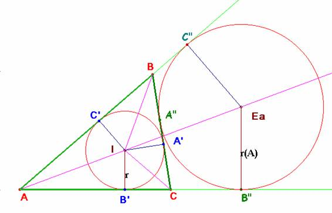

De investigación
Problema 308
Aplicaciones del álgebra a la
geometría
201. La suma de los inversos de los radios de los círculos exinscritos de un triángulo es igual al inverso del radio
del círculo inscrito, y la raíz cuadrada del producto de los cuatro radios es
igual al área del círculo (sic) [Es un “despiste”, se trata del área del
triángulo N. del D.].
Severi,
F. (1952) : Elementos de geometría II, con 144
figuras, traducción de la segunda edición italiana por el profesor T. Martín
Escobar, de la Escuela Industrial de Gijón. Tercera reimpresión. Editorial
Labor, Barcelona. Talleres Gráficos Ibero-Americanos S.A. Reproducción offset. (pág 201)
Del prólogo:
…Tener a la vista el origen histórico y buscar el fundamento
psicológico de cada teoría y sobre todo las nociones de sentido común de donde
ésta nace para encontrar la vía didácticamente más oportuna.
Descubierta la vía maestra, es necesario comenzar de nuevo y desbrozar
los senderos que en ella desembocan de las dificultades demasiado graves para
los inexpertos, de modo que el alumno pueda recorrerlos siguiéndonos, sin
excesivo esfuerzo, en el proceso constructivo.
Hacer que todo esto se encuentre liso y llano, no conviene. Desvanece
el deseo juvenil de la conquista, y la teoría, ya demasiado afinada, aparece
lejana de la vida e interesa poco…
Solución de Saturnino Campo Ruiz, profesor del IES Fray Luis de León de Salamanca.-

Los tres puntos de contacto A’, B’ y C’ de la circunferencia inscrita de radio r en el triángulo ABC, dividen a sus lados en tres pares de segmentos cuya suma es el perímetro 2p. Como son iguales los pares de segmentos concurrentes en cada vértice, tres de ellos no concurrentes sumarán el semiperímetro p.
Así p = AB’ + B’C + BA’ = b + BA’; de donde BA’ = BC’ = p – b; de forma similar CA’ = CB’= p – c y AB’ = AC’ = p – a.
Considerando la circunferencia exinscrita tangente al lado BC en A”, de radio r(A), se tiene AC” = AB”, y ambos iguales a p, pues su suma es AC”+ AB”= AB + BA”+ CA”+ AC = 2p.
De la semejanza de los triángulos AIB’ y AEaB” se obtiene: , llamando r(B) y r(C) a los radios de las circunferencias exinscritas opuestas a los vértices B y C, obtendremos relaciones similares.
La suma de todas ellas da
y de ahí:
Y el producto
(en la última igualdad se ha aplicado la fórmula de Herón del área de un triángulo.)
El área del triángulo es también igual al producto del semiperímetro por el radio de la circunferencia inscrita y simplificando en la expresión anterior se obtiene por último
c.q.d.